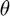

Calculating the T1 Relaxation Constant for Decay of Hyperpolarisation and Initial Magnetisation
Contents
The T1 relaxation constant is calculated, along with the initial magnetisation (this is the magnetisation in the z-direction and is directly proportional to the degree of hyperpolarisation). Additionally, a correction factor, alpha, is calculated to adjust the predicted flip angles from the magnet to the ones that were actually used in the experiment. The parameters are calculated using the following relation:
where:
and the first Mz is M0, the initial magnetisation
and  is the flip angle of the measurement
Inputs
procpar: is the procpar file for the experiment, which is used to find the flip angles, repetition times (TRs) and times each measurement was taken
inp: is 'A' if the data was quantified using AMARES from JMRUI, or it should be 'M' if the data was quantified using integration in MestReNova and the data is a custom .csv integral file
coilnum: should only be entered if inp is 'M'. It is the number of coils used to collect the data.
field: should only be entered if inp is 'M'. It is a cell containing the names of the peaks that have been quantified
Outputs
T1: is an array of the T1 relaxation constants for each peak quantified
M0: is an array of the initial magnetisations in the z-direction for each peak quantified
alpha: is an array of the flip angle correction factors. These values correct the flip angles stored in flip1 in the procpar file to the actual values used
CODs: is an array of the coefficients of determination for the fit of data to the model. It is calculated using:
(see the wikipedia entry for more details)
data: is an array containing the raw data from the experiment. The first column is the times each measurement was collected in seconds; the second column is the estimated flip angle used for each measurement in degrees; the remaining columns are the signal strengths of each measurement for each peak
secinds & secvals: are arrays containing the indices where the flip angle used for a measurement is changed and the value the flip angle is changed to respectively
Child Functions
estParamT1Decay: generates a first estimate for T1, M0 and alpha. It also parses the raw data files into a readible format
T1DecayFunction: calculates the signal strength values from the model using inputted T1, M0 and alpha parameters as well as the times and flip angles used
function [T1,M0,alpha,CODs,data,peaknames,secinds,secvals] = T1DecayCalc(proc,inp,dat,coilnum,field)
Calculating Estimates for the T1, M0 and alpha Parameters
estParamT1Decay is used to calculate initial estimates to feed into lsqcurvefit later
if nargin == 5 [eT1,eM0,eAlpha,data,peaknames,secinds,secvals] = estParamT1Decay(proc,inp,dat,coilnum,field); elseif nargin == 4 [eT1,eM0,eAlpha,data,peaknames,secinds,secvals] = estParamT1Decay(proc,inp,dat,coilnum); elseif nargin == 3 [eT1,eM0,eAlpha,data,peaknames,secinds,secvals] = estParamT1Decay(proc,inp,dat); elseif nargin == 2 [eT1,eM0,eAlpha,data,peaknames,secinds,secvals] = estParamT1Decay(proc,inp); elseif nargin == 1 [eT1,eM0,eAlpha,data,peaknames,secinds,secvals] = estParamT1Decay(proc); else [eT1,eM0,eAlpha,data,peaknames,secinds,secvals] = estParamT1Decay; end numpeak = length(peaknames); M0 = zeros(numpeak,1); alpha = zeros(numpeak,1); T1 = zeros(numpeak,1); CODs = zeros(numpeak,1); for el = 1:numpeak
Calculating T1, M0, alpha and COD for each Quantified Peak
x0 = [eM0(el),eAlpha(el),eT1(el)];
xdataf(:,1) = data(:,1);
xdataf(:,2) = data(:,2);
sigdata = data(:,el+2);
minAlpha = 0.001;
maxAlpha = floor(90/max(data(:,2)));
if x0(2) < minAlpha
x0(2) = minAlpha;
end
lb = [0 0.001 0];
ub = [inf maxAlpha inf];
options = optimoptions('lsqcurvefit', ...
'MaxFunctionEvaluations', 3000,'TolFun',1e-9);
try
[xn,~,residuals] = lsqcurvefit(@T1DecayFunction,x0,xdataf,sigdata,lb,ub,options);
M0(el) = xn(1);
alpha(el) = xn(2);
T1(el) = xn(3);
SSres = sum(residuals)*sum(residuals);
SStot = var(sigdata)*(length(sigdata)-1);
CODs(el) = 1-(SSres/SStot);
catch
peak = peaknames{el};
error = strcat('Error: Cannot evaluate T1 for data from the peak corresponding to ', {' '}, peak);
disp(error)
M0store = M0(1:el-1);
alphastore = alpha(1:el-1);
T1store = T1(1:el-1);
CODsStore = CODs(1:el-1);
peaknameStoreb = peaknames{1:el-1};
if el < numpeak
peaknameStoree = peaknames{el+1:numpeak};
peaknames = {peaknameStoreb, peaknameStoree};
else
peaknames = {peaknameStoreb};
end
numpeak = numpeak-1;
M0 = zeros(numpeak,1);
alpha = zeros(numpeak,1);
T1 = zeros(numpeak,1);
CODs = zeros(numpeak,1);
M0(1:el-1) = M0store;
alpha(1:el-1) = alphastore;
T1(1:el-1) = T1store;
CODs(1:el-1) = CODsStore;
end
Local minimum possible. lsqcurvefit stopped because the final change in the sum of squares relative to its initial value is less than the value of the function tolerance.
'Error: Cannot evaluate T1 for data from the peak corresponding to PYRUVATE_HYDRATE'
end
end
T1 =
44.4454
M0 =
6.9490e+03
alpha =
1.3592
CODs =
0.9997
data =
1.0e+03 *
0.0010 0.0050 0.7956 0.0050
0.0020 0.0050 0.7732 0.0055
0.0030 0.0050 0.7488 0.0045
0.0040 0.0050 0.7274 0.0038
0.0050 0.0050 0.7086 0.0038
0.0060 0.0050 0.6886 0.0033
0.0070 0.0050 0.6709 0.0033
0.0080 0.0050 0.6503 0.0031
0.0090 0.0050 0.6330 0.0034
0.0100 0.0050 0.6138 0.0030
0.0110 0.0100 1.1571 0.0122
0.0120 0.0100 1.0989 0.0113
0.0130 0.0100 1.0440 0.0110
0.0140 0.0100 0.9904 0.0101
0.0150 0.0100 0.9389 0.0092
0.0160 0.0100 0.8903 0.0042
0.0170 0.0100 0.8475 0.0044
0.0180 0.0100 0.8023 0.0036
0.0190 0.0100 0.7653 0.0040
0.0200 0.0100 0.7250 0.0033
0.0210 0.0150 1.0026 0.0041
0.0220 0.0150 0.9190 0.0039
0.0230 0.0150 0.8400 0.0039
0.0240 0.0150 0.7698 0.0035
0.0250 0.0150 0.7042 0.0031
0.0260 0.0150 0.6427 0.0028
0.0270 0.0150 0.5889 0.0028
0.0280 0.0150 0.5395 0.0024
0.0290 0.0150 0.4932 NaN
0.0300 0.0150 0.4511 NaN
0.0310 0.0050 0.1465 0.0018
0.0320 0.0050 0.1424 0.0014
0.0330 0.0050 0.1392 0.0006
0.0340 0.0050 0.1354 0.0015
0.0350 0.0050 0.1306 0.0011
0.0360 0.0050 0.1279 0.0015
0.0370 0.0050 0.1241 0.0013
0.0380 0.0050 0.1215 0.0017
0.0390 0.0050 0.1168 0.0005
0.0400 0.0050 0.1131 0.0005
0.0410 0.0100 0.2135 0.0020
0.0420 0.0100 0.2026 0.0021
0.0430 0.0100 0.1925 0.0019
0.0440 0.0100 0.1826 0.0010
0.0450 0.0100 0.1727 0.0007
0.0460 0.0100 0.1642 0.0015
0.0470 0.0100 0.1562 0.0009
0.0480 0.0100 0.1492 0.0018
0.0490 0.0100 0.1409 0.0014
0.0500 0.0100 0.1334 0.0011
0.0510 0.0150 0.1842 0.0014
0.0520 0.0150 0.1693 0.0007
0.0530 0.0150 0.1551 0.0015
0.0540 0.0150 0.1411 0.0012
0.0550 0.0150 0.1294 0.0011
0.0560 0.0150 0.1189 0.0006
0.0570 0.0150 0.1085 0.0010
0.0580 0.0150 0.1000 0.0007
0.0590 0.0150 0.0912 0.0008
0.0600 0.0150 0.0844 0.0011
peaknames =
1×1 cell array
{'PYRUVATE'}
secinds =
1
11
21
31
41
51
secvals =
5
10
15
5
10
15
Notes
The inputs used in the example were:
proc: 'procpar28_11_19_Dissolution'
inp: 'A'
dat: {'Decay_Dissolution_28_11_19_even.txt', 'Decay_Dissolution_28_11_19_odd.txt'}
The example was run by putting:
[T1,M0,alpha,CODs,data,peaknames,secinds,secvals] = T1DecayCalc('procpar28_11_19_Dissolution','A', {'Decay_Dissolution_28_11_19_even.txt', 'Decay_Dissolution_28_11_19_odd.txt'})
into the command window